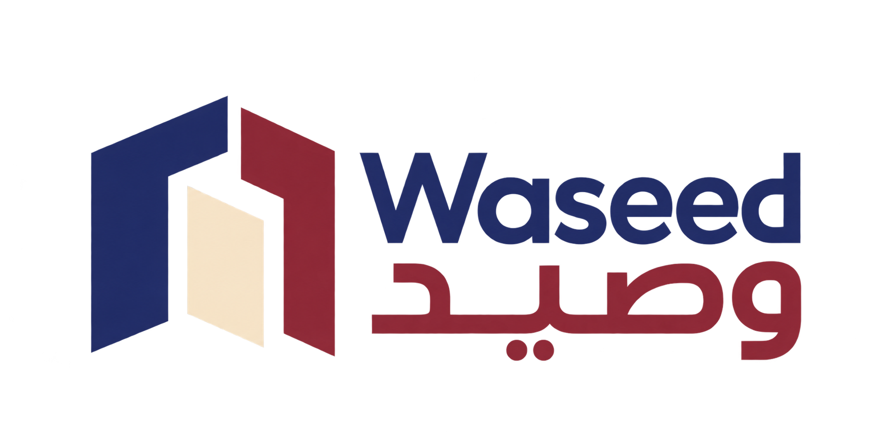

A clear way forwardEnter the next system with confidence
Waseed is a proposed technology company designed for organizations moving toward more intelligent services and systems. Its central idea is a threshold between present reality and what can be built next. From that position, it would build digital platforms and gateways that organize access, connection, and information flow across systems. The working method begins with the real context and the outcome a user or team needs, then proceeds through clear architecture that makes each transition understandable and manageable from the start. Ideas move into tangible form before more complexity is added. Over time, Waseed could grow into a trusted enterprise gateway from fragmented tools to a connected operating environment.
نفتح مدخلًا منظمًا إلى تقنيات أكثر قدرة واتصالًا.